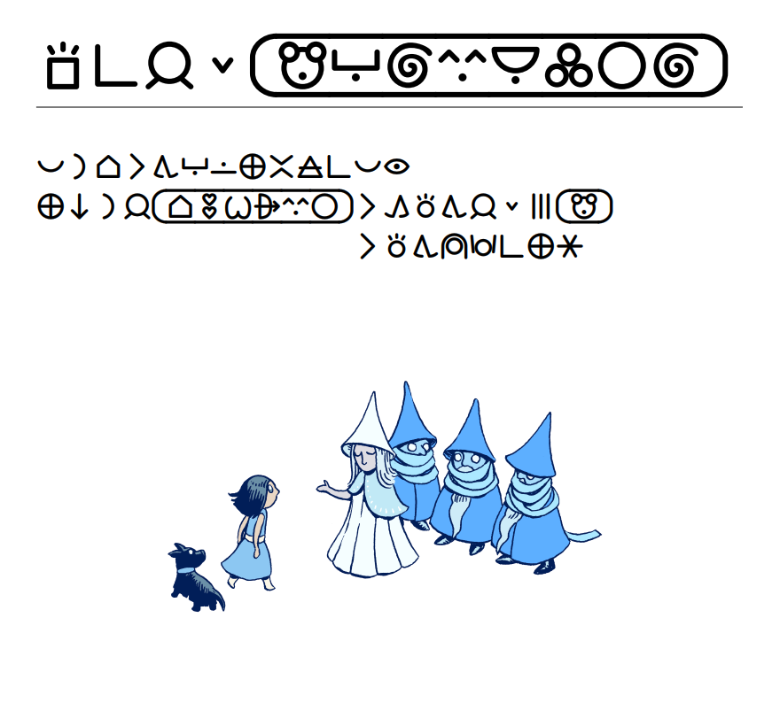

This extension implements the two number systems described in lipu pu, available with the "[(number) in vague toki pona]" and "[(number) in specific toki pona]" phrases. For example:
"[1 in vague toki pona]" becomes "wan"
"[2 in vague toki pona]" becomes "tu"
"[3 in vague toki pona]" becomes "mute"
"[4 in vague toki pona]" becomes "mute"
"[47 in vague toki pona]" becomes "mute"
"[413 in vague toki pona]" becomes "mute"
"[1 in specific toki pona]" becomes "wan"
"[2 in specific toki pona]" becomes "tu"
"[3 in specific toki pona]" becomes "tu wan"
"[4 in specific toki pona]" becomes "tu tu"
"[47 in specific toki pona]" becomes "mute mute luka tu"
"[413 in specific toki pona]" becomes "ale ale ale ale luka luka tu wan"
§1.2. Text with lists
In lieu of English list-writing phrases like "[(list of objects) with definite articles]", we have:
say "[(list of objects) as subject]"
Say a list of objects, joined by «en».
say "[(list of objects) li]"
Say a list of objects, joined by «en», with «li» at the end. (The «li» is omitted if the only object in the list is the player and the story viewpoint is first or second person, since «li» is not needed after a subject of just «mi» or «sina».)
say "[e (list of objects)]"
Say a list of things as direct objects; that is to say, with each one prepended by «e». In alphabetic mode, commas are included for three or more things. In logographic mode, all entries after the second are printed on new lines and indented according to the current ideographic indentation level.
For example:
The initial appearance of the desk is "supa li suli. [lob]supa li jo [indenting 3][e list of for sale things on the desk].".
might say, depending on what is on the desk:
supa li suli. supa li jo e kili, e pan, e poki telo.
supa li suli. supa li jo e kili e pan.
supa li suli. supa li jo e kili.
supa li suli. supa li jo e ala.
Comma usage in toki pona is a matter of style. If they are not your style, you can use the following options to omit them from the alphabetic orthography.
Use no commas for subjects.
Use no commas for direct objects.
In logographic mode, commas are never used, regardless of the above options. Instead, the list is printed on multiple lines, and indented, like this:
supa li suli.
supa li jo e kili
e pan
e pokitelo.
Chapter 2: Adaptive Text and Responses
§2.1. Talking about things
The phrase "[(noun) li]" says the noun and then " li", unless the noun is "mi" or "sina", in which case it just says the noun. (More specifically, it drops the «li» if the noun is the player and the viewpoint is first or second person.) It's sort of like saying "[The noun] [are]" in English.
"[ona]" is an equivalent to Inform's "[them]" phrase, but simpler. It always prints "ona", unless the regarded noun is the player, in which case it's equivalent to "[mi]", since it's a little strange to refer to myself or yourself as "ona". This phrase is handy for general responses like this:
Instead of smelling something, say "kon [regarding the noun][ona] li nasa ala.".
Yielding:
>nena e kiwen
kon ona li nasa ala.
>nena e mi
kon sina li nasa ala.
§2.2. Adapting text about the player
The "[mi]" phrase is equivalent to Inform's "[we]" phrase. It prints either "mi", "sina", or "ona", depending on the story viewpoint. Unless you plan to switch the story viewpoint, you probably won't need this phrase.
Chapter 3: Other Considerations
§3.1. Translated Responses
This extension provides translations for default rule responses. You can view these in the extension source, or with the RESPONSES ALL command. See §14.10. Responses for how to override responses.
The responses make heavy use of the "[mi li]" phrase, which is shorthand for "[the player li]", so it evaluates to "mi" or "sina" or "ona li", depending on the story viewpoint.
§3.2. Consider Implementing These Actions
The following verbs are not implemented by this extension, but are common enough that you should consider implementing them:
kalama
mu
olin
toki
unpa
uta. ">uta olin e [thing]" is understood as kissing, and ">uta pilin e [thing]" is understood as tasting, but just ">uta e [thing]" could mean kissing or tasting or biting or something else, so its implementation is left to the story author.
This extension implements fancy typographic features for sitelen pona — or rather, it defines a number of phrases that leverage the features of sitelen pona fonts, nasin nanpa in particular. This extension defines a variable called `the current orthography`, which can be `alphabetic` or `logographic`, and in the latter case, the game assumes that its interpreter is using a compatible sitelen pona font.
This extension's Toggling Orthographical Features chapter defines commands that the player can use to customize the orthography; to switch between sitelen pona and sitelen Lasina, to toggle long glyphs, or to toggle compound glyphs. If you do not wish to include these options (or perhaps you wish not to support sitelen pona at all, in which case you can ignore the rest of this chapter) you can unlist them like so:
Chapter - Where We're Going We Don't Need Logography (replacing Toggling Orthographical Features in Toki Pona by Vivian Rose)
§4.2. Wait, how do we control which font is used?
An Inform 7 story has no way of signaling a font preference to the interpreter. This extension assumes that some external mechanism ensures that the nasin nanpa font is used when `the current orthography is logographic`, and a more traditional font is used otherwise. This can be achieved on a web interpreter like Bisquixe or Vorple using custom CSS. On other interpreters, the player will probably have to manually set the font to nasin nanpa, and even then, the interpreter may not be able to display it properly.
If you want the player to be able to switch between alphabetic and logographic mode, and you have some other mechanism to make sure that the presentation font changes as well, Example 1 offers some commands for configuring orthographic settings.
§4.3. Cartouches
Use "[cartouche]" and "[end cartouche]" to write cartouches. This example works in either orthography, which is important if your story allows the player to choose how they would prefer to read it.
The printed name of Counterfeit Monkey is "lipu [if the current orthography is alphabetic]Kantape Manki[otherwise][cartouche]kama ante nimi toki anu pilin e[ideographic space]mani ale nimi kama ilo[end cartouche]".
But we can be more concise:
The printed name of Counterfeit Monkey is "lipu [name]kama ante nimi toki anu pilin e[ideographic space]mani ale nimi kama ilo[end name]".
say "[name]"(Glulx only)
This text substitution denotes that the text following should be interpreted as a sequence of name glyphs. So, in logographic mode, it prints the beginning of a cartouche, identical to the "[cartouche]" phrase.
In alphabetic mode, it actually changes how the text following is displayed; instead of the whole text, only the first letter of each word is produced. The text is also printed in title case. So, "lipu [name]kama ante nimi toki anu pilin e[ideographic space]mani ale nimi kama ilo[end name]" would become "lipu Kantape Manki".
say "[end name]"(Glulx only)
This text substitution denotes the end of a sequence of name glyphs. So, in logographic mode, it prints the end of a cartouche, identical to the "[end cartouche]" phrase. In alphabetic mode, it just tells Inform when to stop acronymizing.
The "[name]…[end name]" phrases do not support the more concise, experimental name-writing systems that use tally marks or dots. If you want to use those, write out something like "jan [if the current orthography is alphabetic]Sonja[else][cartouche]sona,,, jan,,[end cartouche]".
§4.4. Compound Glyphs
The "[~]" phrase, terse to spare the proser's hands, says a space if the current orthography is alphabetic, or a compound glyph joiner character otherwise. For example, "toki[~]pona" becomes "toki pona" in alphabetic mode, and becomes tokipona in logographic mode.
There is also a "compound glyphs enabled" truth state variable that, when false, makes this phrase evaluate to a simple space regardless of orthography.
§4.5. Long Glyphs
"[long glyph]" ("[LG]" for short) and "[end long glyph]" ("[ELG]" for short) mark long glyphs. Some elongatable glyphs have shorthand phrases defined; for example, "mi pali [kepeken] ilo nanpa[ELG]." is equivalent to "mi pali kepeken[LG] ilo nanpa[ELG]".
Beware of forgetting an "[end long glyph]", like so:
Instead of praying, say "sina toki [tawa] sewi. taso sewi li kute ala.". [«tawa» erroneously extends all the way through the second sentence.]
To make these errors more obvious, the "scold unended long glyphs rule" will print a warning message when a long glyph is said without its end marker. TODO not true?
There is also a "long glyphs enabled" truth variable that, when false, causes long glyph markers to be ignored even in logographic mode.
§4.6. Indentation
lipu su organizes long sentences with a nifty indentation technique, placing each repetition of «li» or «e» on its own line under the first. This extension defines the following phrases for emulating that style. The most basic of these is "[ideographic space]", which inserts an ideographic space, but we seldom need this on its own. Instead, we can use these phrases:
say "[indenting (number)]"
This text substitution produces no text. It's used only for a side-effect: it sets the current ideographic indentation level to the number specified.
say "[indent]"
Prints a number of ideographic spaces equal to the current ideographic indentation level, if the current orthography is logographic; otherwise, does nothing
say "[lob]"
Short for "[logographic-only break]". Prints a line break if the current orthography is logographic; otherwise, does nothing. This phrase is useful because sitelen pona looks nice with more line breaks.
say "[ilob]"
Short for "[indented logographic-only break]". Same as "[lob][indent]": prints a line break and an indent if the current orthography is logographic; otherwise does nothing.
With these, we can say something like "sina wile [indenting 2]e kili [ilob]e pan [ilob]e telo." This puts each «e {noun}» on its own line, forming an elegant column of «e»s.
sina wile e kili
e pan
e telo.
In alphabetic mode, it simply says "sina wile e kili e pan e telo.".
But wait, that latter case might look better with commas. Instead of "[ilob]", we can use:
say "[cilob]"
Prints a comma if the orthography is alphabetic. Otherwise, prints a line break and an indent dependent on the current ideographic indentation level.
"sina wile [indenting 2]e kili [cilob]e pan [cilob]e telo." is identical to the previous example for the logographic orthography, but in alphabetic mode it says "sina wile e kili, e pan, e telo.". This phrase is most useful for long, complex sentences that need broken up for readability regardless of the writing system. If you plan for your story to only use sitelen pona, then don't bother remembering "[cilob]"; just use "[ilob]".
§4.7. Advanced Indentation

For more complex cases, we might want a way to say some text while also setting the current ideographic indentation level to the length of that text. For example, consider the page of lipu su where Dorothy meets the munchkins. The only indented sentence on the page reads «ma ni la jan Towasi li kama toki tawa jan lili mute M[ansukin] li toki tawa meli wawa pi ma lete». The second «li» is printed on a second line under the first «li». To include this sentence in our prose, indented the same, we could use the phrases introduced in the previous section, like so:
To meet the Ozians:
say "ma ni la jan [name]tomo olin wile alasa suwi ijo[end name][indenting 11] li kama toki tawa jan lili mute [if the current orthography is alphabetic]Mansukin[else][cartouche]mu[end cartouche][end if][ilob] li toki tawa meli wawa pi ma lete".
This requires manually counting the number of spaces to indent; laborious, but simple enough. But suppose that, in our hypothetical interactive adaptation of lipu su, Dorothy's name might change depending on the player's actions, or be yet-unrevealed. This would complicate the above example, since we would have to replace "11" with a calculated value dependent on the length of Dorothy's current moniker. Instead, we can use the "dentally say" phrase.
dentally say (text)
Say the given text, and set the current ideographic indentation level to the ideographic length of the text.
For example:
The Kansan is a person. The Kansan can be anonymous. The Kansan can be transgender. The printed name of the Kansan is "[if anonymous]jan lili[otherwise if transgender]jan [name]tomo olin wile ijo jan alasa nasin[end name][otherwise]jan [name]tomo olin wile alasa suwi ijo[end name]".
To say short for Munchkin: [Just in case we want to use this abbreviation often, as lipu su does.]
say "[if the current orthography is alphabetic]Mansukin[else][cartouche]mu[end cartouche]".
To meet the Ozians:
dentally say "ma ni la [Kansan] ";
say "li kama toki tawa jan lili mute [short for Munchkin] [ilob]li toki tawa meli wawa pi ma lete".
Might give us, depending on the status of the Kansan:
ma ni la jan lili li kama toki tawa jan lili mute [mu]
li toki tawa meli wawa pi ma lete
ma ni la jan [tomo olin wile alasa suwi ijo] li kama toki tawa jan lili mute [mu]
li toki tawa meli wawa pi ma lete
ma ni la jan [tomo olin wile ijo jan alasa nasin] li kama toki tawa jan lili mute [mu]
li toki tawa meli wawa pi ma lete
For a non-su example, suppose we want to print several lines of dialogue from a shopkeeper, but the shopkeeper's printed name varies depending on whether she has introduced herself. We might try something like this:
The printed name of the shopkeeper is "[if introduced]jan [name]lili ijo[end name][else]jan esun".
Instead of showing the orchid mantis to the shopkeeper:
say "sina pana e [orchid mantis] [tawa] [shopkeeper][ELG].";
dentally say "[shopkeeper] li toki: [te]";
say "pipi ni li suwi mute a! [ilob]taso mi esun ala e pipi.[to]".
§4.8. Quotation Marks, or 「te & to」
lipu su's corner brackets are (arguably) particles, called te and to. They can be invoked thus:
say "sina toki: [te]mi wile moku.[to]".
In logographic mode, these should show up as corner brackets: sina toki: te|mi wile moku.|to
In alphabetic mode, these just render as double quotes, but not quite normal double quotes. Can you see the difference between "" and “”? The latter pair is a Left Double Quotation Mark and Right Double Quotation Mark. The difference is barely visible in most fonts, but if we're going through the trouble of marking all our quotes as left and right, we may as well take advantage of it.
If you need a quote within a quote, try "[meta te]" and "[meta to]".
§4.9. The Banner
You should provide your sitelen pona name as the "logographic story author" text, like so:
The story author is "jan Wiwijen". The logographic story author is "jan [cartouche]wan ijo wan ijo jaki en nanpa[end cartouche]".
The banner uses this in logographic mode. If your story title contains a cartouche (or needs to use some other logographic feature like a combined glyph) then provide a "logographic story title" as well:
"jan Osu pi wawa nasa" by jan Sonja
The logographic story author is "jan [cartouche]sona olin nasa jasima alasa[end cartouche]".
The logographic story title is "jan [cartouche]o suli uta[end cartouche] pi wawa nasa".
§4.10. Supported fonts
The sitelen pona font doesn't have to be nasin nanpa; it can be some other sitelen pona font with similar ligatures. If it uses different ligatures (for example, it uses different characters for rendering combined glyphs), you will have to override this extension's "Configuration Specific to the nasin nanpa Font" chapter, like so:
Chapter - Some Other Font Support (in place of Configuration Specific to the nasin nanpa Font in Toki Pona by Vivian Rose):
[Lots of logic here]
If you go through the trouble of implementing support for your favorite sitelen pona font, consider sharing your code; it could be incorporated in another release of this extension. UCSUR support is theoretically possible via i6 inclusion even though Inform 7 does not support such high codepoints.
ExampleOrthographic Toggling How we might allow the player to configure orthographic settings.
If we want our story to work in both sitelen pona and sitelen Lasina, then in addition to coding our prose carefully to work in both orthographies, we must also provide some mechanism for choosing which orthography to use. This example introduces three commands: one to change the orthography, and two to toggle some settings for sitelen pona display, in case the player happens to dislike combined or extended glyphs, or in case their interpreter displays them incorrectly due to spotty font support.
Orthography toggling is an action out of world.
Understand "sitelen" or "sitelen pona ala/--" or "sitelen Lasina/Latin ala/--" or "font" or "orthography" or "sp" or "sl" as orthography toggling.
Carry out orthography toggling (this is the default orthography toggling rule):
if the current orthography is alphabetic:
now the current orthography is logographic;
now the command prompt is the appropriate command prompt;
say "tenpo ni la musi ni li toki kepeken[long glyph] sitelen[~]pona[end long glyph].[paragraph break]";
if glyph composition enabled is true:
say "[te]toki pona[to] li sama [te]toki[~]pona[to].[line break]
ni li ike [tawa] sina[ELG] la o [te][command style]sitelen tu[roman type][to].";
otherwise:
say "sitelen tu ken ala wan.[line break]
ni li ike [tawa] sina[ELG] la o [te][command style]sitelen tu[roman type][to].[paragraph break]";
if long glyphs enabled is true:
say "[te]kulupu pi waso lili li mu lon tomo waso.[to] li sama [te]kulupu [pi] waso lili[ELG] li mu [lon] tomo waso[ELG].[to].[line break]
ni li ike [tawa] sina[ELG] la[comma] o [te][command style]sitelen supa[roman type][to].";
otherwise:
say "sitelen ken ala supa.[line break]
ni li ike [tawa] sina[ELG] la[comma] o [te][command style]sitelen supa[roman type][to].";
otherwise:
now the current orthography is alphabetic;
now the command prompt is the appropriate command prompt;
say "tenpo ni la, musi ni li toki kepeken sitelen Lasina.".
Long glyph toggling is an action out of world.
Understand "sitelen supa/palisa ala/--" as long glyph toggling.
Carry out long glyph toggling (this is the default long glyph toggling rule):
if the current orthography is alphabetic:
say "sina ken ala ante e sitelen supa tan ni: tenpo ni la, musi ni li toki kepeken sitelen Lasina.
sina [te][command style]sitelen pona[roman type][to] la musi ni li toki kepeken sitelen pona.";
otherwise:
if long glyphs enabled is true:
now long glyphs enabled is false;
say "ante. tenpo ni la sitelen pi musi ni li ken ala supa.";
otherwise:
now long glyphs enabled is true;
say "ante. tenpo ni la sitelen [pi] musi ni li ken supa.
[te]sitelen [pi] musi ni[ELG][to] li sama [te]sitelen pi musi ni[to].
[te]pipi li mu [lon] kasi[ELG][to] li sama [te]pipi li mu lon kasi[to].".
Glyph composition toggling is an action out of world.
Understand "sitelen wan/tu" as glyph composition toggling.
Carry out glyph composition toggling (this is the default glyph composition toggling rule):
if the current orthography is alphabetic:
say "[roman type]tenpo ni, musi ni li toki kepeken sitelen Lasina.
sina [te][command style]sitelen pona[roman type][to] la musi ni li toki kepeken sitelen pona.";
otherwise:
if glyph composition enabled is true:
now glyph composition enabled is false;
say "ante. tenpo ni la sitelen tu ken ala wan.
[te]toki pona[to] li sitelen tu taso.";
otherwise:
now glyph composition enabled is true;
say "ante. tenpo ni la sitelen tu li ken wan.
[te]toki pona[to] li sama [te]toki[~]pona[to].".
By the way, "[command style]" is a way to format some text to resemble a command. Its implementation is just:
Section - Style Suggested Commands Like Input (for use with Glulx Text Effects by Emily Short)
To say command style (this is the style example commands like input rule): say "[roman type][command prompt][input style]".
Section - Style Suggested Commands Like Input (for use without Glulx Text Effects by Emily Short)
To say command style (this is the prefix example commands with the prompt rule): say "[command prompt]".
This is not strictly a toki pona thing. However, lacking a storied history of toki pona text adventures, the player may struggle to intuit available command syntax. Highlighting suggested commands in the input style and prefacing them with the command prompt (“>”) can help get the point across. Some of this extension's default response substitutions make use of this. If you don't like this technique, feel free to replace the sections excerpted above with one like this:
Section - Ditch Command Style (replacing Style Suggested Commands Like Input in Toki Pona by Vivian Rose)
To say command style: do nothing.
ExampleTalking Once this example is filled out, it will demonstrate a thorough implementation of the >TOKI command, as used in anpa ma.
 Orthographic Toggling
Orthographic Toggling